常见进程调度算法|操作系统
处理器调度
在多道程序系统中，进程数量往往多于处理机的个数，所以进程争用处理机的情况在所难免。而为了对进程进行处理器的分配和调度问题就显得尤为重要，操作系统对处理器的管理通过处理器调度进行实现。
调度的层次
处理器的调度分为高级调度、中级调度和低级调度。
高级调度
高级调度，又称作业调度，简而言之是内存与辅存之间的调度，主要是按一点原则从外存上处于后备状态的作业中进行挑选，并为其分配内存和I/O等资源从而建立对应进程，使其得到CPU使用权。
作业调度的执行频率较低，通常为几分钟一次。
中级调度
中级调度，又称内存调度，用于将暂时不能运行的进程调至外存等待，此时的进程状态为挂起态。当它们具备运行条件且内存又稍有空闲时，又由中级调度决定把外存上的就绪进程重新调入到内存并改为就绪态，以此提高内存利用率和系统吞吐量。
低级调度
低级调度，又称进程调度，主要是通过某种方法策略从就绪队列中选取一个进程为其分配CPU。进程调度是最基本的，不可或缺。
进程调度的频率很高，通常几十毫秒一次。
相关评价准则
CPU 利用率
系统吞吐量
系统吞吐量表示单位时间内 CPU 完成作业的数量。
通常，长作业需要消耗较长的处理机时间，所以会降低系统吞吐量；而短作业则提高吞吐量。
时间准则
- 提交时间：作业提交给操作系统的时间点
- 开始时间：作业真正开始执行的时间点
- 服务时间：作业需要在处理机中运行的总时间
- 完成时间：作业完全处理完毕的时间点
- 完成时间 = 开始时间 + 服务时间
- 周转时间 = 完成时间 - 提交时间
- 带权周转时间 = 周转时间 / 服务时间
- 等待时间 = 开始时间 - 提交时间 = 周转时间 - 运行时间
- 响应比 = (等待时间 + 服务时间) / 服务时间 = 等待时间/服务时间 + 1
调度的实现
调度器

上图给出了调度程序（即调度器）的结构示意图。其中特别需要注意的是上下文切换器。
上下文切换器在对处理机进行切换时，需要大量 load 和 store 命令。会发生两对上下文的切换操作：
- 将当前进程的上下文保存到其 PCB 中，再装入分派程序的上下文，以便分派程序运行；
- 移出分派程序的上下文，将新选进程的 CPU 现场信息装入处理机的各个相应寄存器中。
调度的时机
需要进行进程调度与切换的情况
当前运行的进程主动放弃处理机
- 进程正常终止
- 运行过程中发生异常而终止
- 进程主动请求阻塞(如等待I/O)
有的系统中，只允许进程主动放弃处理机
当前运行的进程被动放弃处理机
- 分给进程的时间片用完
- 有更紧急的事需要处理( 如I/O中断)
- 有更高优先级的进程进入就绪队列
有的系统中，进程可以主动放弃处理机，当有更紧急的任务需要处理时，也会强制剥夺处理机（被动放弃）
不能进行进程调度与切换的情况
- 在处理中断的过程中。中断处理过程复杂，与硬件密切相关，很难做到在中断处理过程中进行进程切换。
- 进程在操作系统内核程序临界区中。
- 在原子操作过程中(原语)。原子操作不可中断，要一气呵成(如之前讲过的修改PCB中进程状态标志，并把PCB放到相应队列)
✅进程在操作系统内核程序临界区中不能进行调度与切换
❌进程处于临界区时不能进行处理机调度
进程切换与过程
狭义的进程调度与进程切换的区别:
- 狭义的进程调度指的是从就绪队列中选中一个要运行的进程
这个进程可以是刚刚被暂停执行的进程，也可能是另一个进程，后一种情况就需要进程切换
- 进程切换是指一个进程让出处理机，由另一个进程占用处理机的过程
广义的进程调度包含了选择一个进程和进程切换两个步骤
进程切换的过程主要完成：
- 对原来运行进程各种数据的保存
- 对新的进程各种数据的恢复
⚠️进程切换是有代价的，因此如果过于频繁的进行进程调度、切换，必然会使整个系统的效率降低，使系统大部分时间都花在了进程切换上，而真正用于执行进程的时间减少。
闲逛进程
在进程切换中，如果系统中没有就绪进程，就会调度 闲逛进程（idle） 运行。
如果没有其他进程就绪，该进程就一直运行，并且在运行过程中测试中断。
闲逛进程的优先级最低，不需要CPU之外的资源，它不会被阻塞。
调度方式
进程调度又可分为 抢占式 和 非抢占式 两种（或剥夺式和非剥夺式）。
所谓非抢占式就是当进程正在运行时，它就会一直运行，直到该进程完成或发生某个事件发生而被阻塞时，才会把 CPU 让给其他进程。
对应的，抢占式就是当进程正在运行的时，可以被打断，把 CPU 让给其他进程。
常见进程调度算法
先到先服务FCFS
先到先服务调度算法（First Come First Serve，FCFS）：按照进程到达的先后顺序进行调度，先到的进程就先被调度，也就是说，等待时间越久的越优先得到服务。该算法既可用于作业调度，也可用于进程调度，基本思想是一致的。
下面给出一实例加以说明：
| 进程 | 到达时间 | 运行时间 |
|---|---|---|
| 0 | 7 | |
| 2 | 4 | |
| 4 | 1 | |
| 5 | 4 |
根据其到达时间进行排序，以运行时间作为长度，可以用如下甘特图表示：
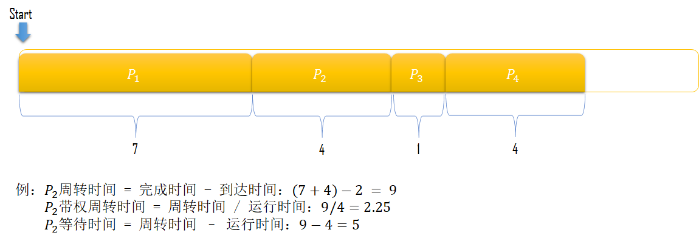
显而易见， 算法并不会强制让终止运行，所以是 非抢占式 的，此外我们还能得到如下结论：
优点：算法实现简单，利于长作业（CPU繁忙型）工作
缺点：不利于短作业（I/O繁忙型），排在长进程后面的短进程需要等待很长时间
短作业优先SJF
最短作业/进程优先调度算法（Shortest Job First，SJF）：每次调度时选择当前已到达的、且运行时间最短 的进程。
思路很简单，继续用上文中的实例进行计算。
首先着眼于 “当前已到达”，显然只有在0时刻达到，于是在运行队列中放入，得到；
由于运行需要的时间是7，运行结束之后时间点为7，此时已经到达，此时再着眼于 “运行时间最短”，将它们进行排序得到.
最终即可得到运行队列：.
于是我们就可以通过时间准则计算相关数据了，此处不再赘述。
可以证明 调度算法是最优的。
对于给定的一组进程，该算法的平均等待时间、平均周转时间最小
拓展内容
算法是"最优"的调度，但难点在于如何预测进程的执行时间(Burst Time)
对于批处理系统中的长期调度来说，可以将用户提交进程时输入的执行时间上限作为依据。
但对于短期调度来说，没有办法能够提前得知下一个要被分配CPU的进程的执行时间长短，因此只能通过历史数据来进行预测，公式如下：
包括最近信息，而 存储了过去的历史信息。参数 控制最近和过去历史在预测中的权重：
如果，那么，最近历史没有影响（当前情形为瞬态）；
如果，那么，只有最近 CPU 执行才重要（过去历史被认为是陈旧的、无关的）
更为常见的是，这样最近历史和过去历史同样重要。
初始值可作为常量或系统的总体平均值。
易知算法也是 非抢占式 的，它降低了平均等待时间，提高了吞吐量。
但算法和算法恰好相反，它对长程不利。如果一直有短进程到来，那么长进程永远得不到调度，长进程有可能会饿死，处于一直等待短作业执行完毕的状态。
此外，此算法未考虑作业/进程的优先紧迫程度，不能用于实时系统。
高响应比优先HRRN
高响应比优先算法（Highest Response Ratio Next，HRRN）：只有当前运行的进程主动放弃 CPU 时（正常/异常完成，或主动阻塞），才需要进行调度，调度时计算所有就绪进程的响应比，为响应比最高的进程分配 CPU。
通过对响应比的分析可知：当等待时间相同时，服务时间越短响应比越高，所以此时 HRRN 算法类似于 SJF 算法；当服务时间相同时，等待时间越短响应比越高，所以此时 HRRN 算法类似于 FCFS 算法。
对于长作业来说，随着等待时间的增加其响应比会相应地提高，所以克服了“饥饿”现象。
但 HRRN 算法每次都需要计算每个作业的响应比，增加了系统的开销。
轮转调度RR
轮转法（Round-Robin Scheduling，RR），又称时间片调度算法：系统将所有就绪进程按 FIFO 规则排队，按一定的时间间隔（即时间片，通常为10ms~200ms）把CPU分配给队列中的进程。示例图如下：
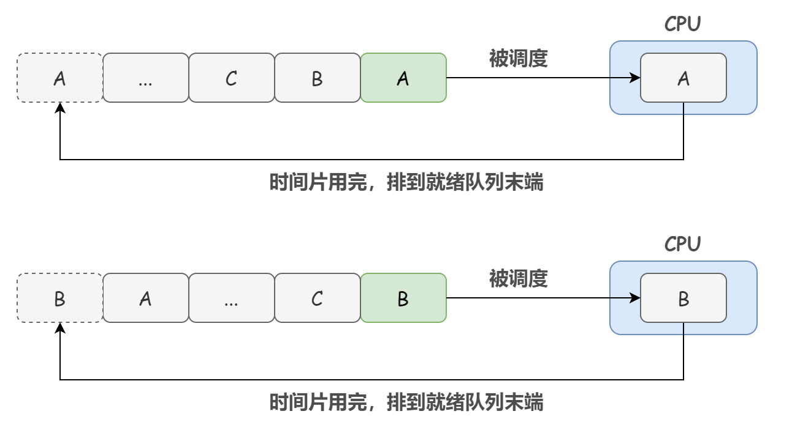
该算法对每个进程都一视同仁，就好比大家都排好队，一个一个来，每个人都运行一会儿再接着重新排队等待运行。
需要注意的是：时间片的长度是一个很关键的因素。通常由 系统响应时间、就绪队列中的进程数目和系统处理能力等因素确定。
如果时间片设置得太短，就会导致频繁的进程上下文切换，降低了 CPU 效率；
如果时间片设置得太长，那么随着就绪队列中进程数目的增加，轮转一次消耗的总时间加长，即每隔进程的相应速度放慢。甚至时间片大到让进程足以完成其所有任务， 调度算法便退化成 算法。
不难发现，调度算法属于 抢占式
最短剩余时间优先SRTN
最短剩余时间优先（Shortest Remaining Time Next，SRTN）算法是最短作业优先的抢占式版本
当一个新的进程到达时，把它所需要的整个运行时间与当前进程的剩余运行时间作比较。如果新的进程需要的时间更少，则挂起当前进程，运行新的进程，否则新的进程等待。
再次使用上文中提到的实例进行计算。
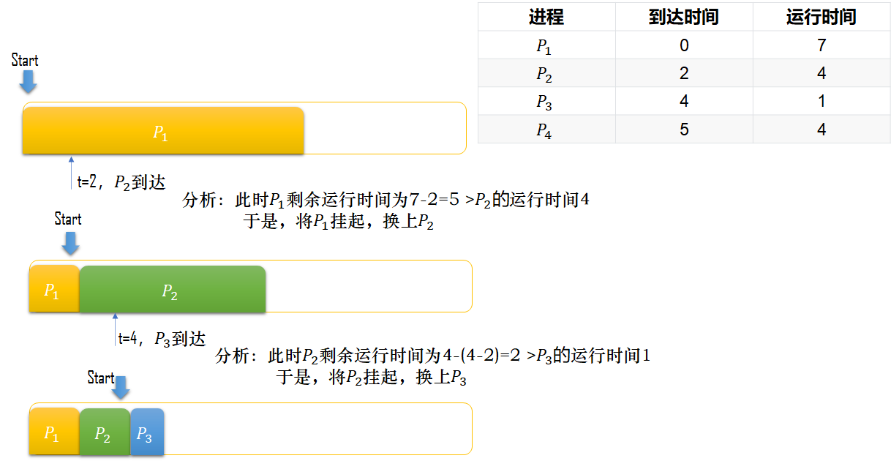
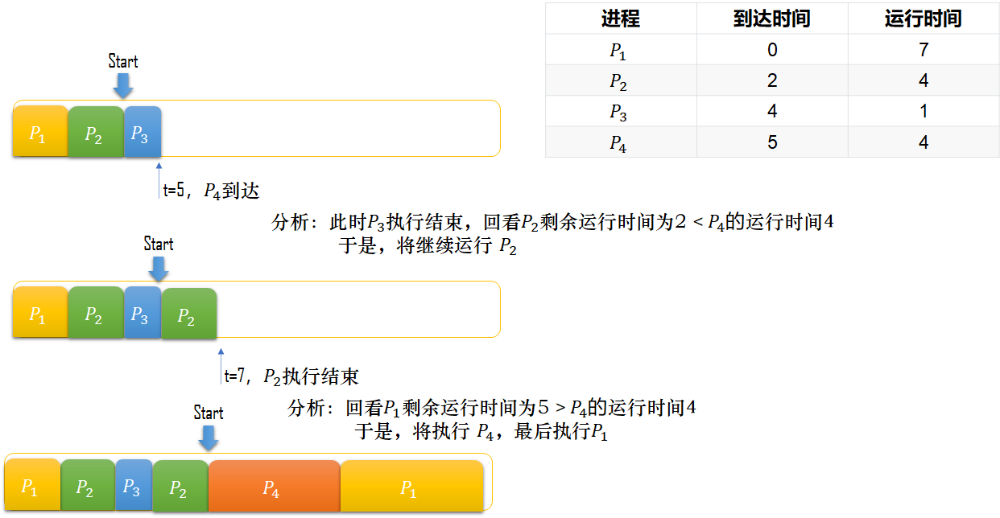
调度算法属于 抢占式
最高优先级HPF
RR 调度算法对所有的进程都是相同的策略，如果用户进程太多，可能会导致内核的服务进程响应跟不上。而在操作系统中，内核进程是比用户进程重要的多的，毕竟它关乎整个系统的稳定性。
最高优先级调度算法（Highest Priority First，HPF）就是从就绪队列中选择最高优先级的进程进行运行。
进程的优先级分为静态优先级或动态优先级：
- 静态优先级：创建进程时候，就预先规定优先级，并且整个运行过程中该进程的优先级都不会发生变化。一般来说，内核进程的优先级都是高于用户进程的。
- 动态优先级：根据进程的动态变化调整优先级。比如随着进程的运行时间增加，适当的降低其优先级；随着就绪队列中进程的等待时间增加，适当的升高其优先级。
另外，需要注意的是，最高优先级算法并非是固定的抢占式策略或非抢占式，系统可预先规定使用哪种策略：
- 非抢占式：当就绪队列中出现优先级高的进程，则运行完当前进程后，再选择该优先级高的进程。
- 抢占式：当就绪队列中出现优先级高的进程，则立即强制剥夺当前运行进程的 CPU 资源，分配给优先级更高的进程运行。
一般来说，进程的优先级有以下原则的参考：
- 系统进程 > 用户进程
- 交互进程 > 非交互进程（或 前台进程 > 后台进程）
- I/O型进程 > 计算型进程
多级反馈轮转RRMF
多级反馈轮转法（Round Robin with Multilevel Feedback，RRMF）又称多级反馈队列调度（ Multilevel Feedback Queue Scheduling），是集合了算法和算法的调度算法，可以很好地兼顾多方面的系统目标。
算法思想
设置 个就绪队列（），其中各个队列对于的优先级不同，一般有：
.
为每一个就绪队列 都分配相应的时间片，且优先级越高的队列被分配到的时间片越小.
设 内的进程遵循 时间片轮转法则(即)，而其余队列遵循法则.
为当前已经等待被执行的各个进程分配好就绪队列
以上即为算法的基本规则和准备，下面给出算法的具体运作流程：
- 当一个进程 进入待调度队列等待时，首先将其放入当前优先级最高的队列 ，放入方式遵循原则，放在已有进程的后面；
- 对于任意 队列，以其对应时间片 作为每个进程的最大执行时间段，按照算法思想依次运行该队列的进程；
- 当轮到某进程执行时，如果它能够在该队列规定的时间片内完成，则直接执行，否则执行完对应时间片后将其改放入下一队列，即 队列内（当然同样是放在队列末尾，）等待被执行；
- 当某一队列为空，即 时，系统才开始对下一队列 进行调度，依次类推直到被降至 时，才按照算法调度；
- 当系统正在执行 中的进程 ，而此时又有新的进程 被放入比之优先级更高的队列中时，新进程将会抢占正在执行的 CPU，使得 CPU 转而先去对队列 处理，而这时 则被放入 的末尾等待执行。
实例演示
再次使用上文中提到的实例进行演示。
首先我们先假设有如下规定：
演示规定
- 有三个优先级队列，优先级依次减小；
- 在上文中提到的进程到来前已有几个进程（用小写字母表示）在等待CPU执行，其分配如下：
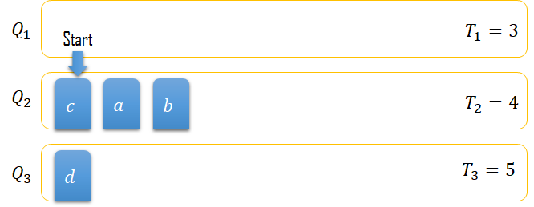
- 在时刻，即到来时，CPU执行到进程处，且已执行了3个单位时间
调度算法开始执行，步骤如下：
首先，到来，所以将其放置在处；
因为，即进程并没有执行完毕，所以需要将剩下的放置于末尾，CPU转而执行；
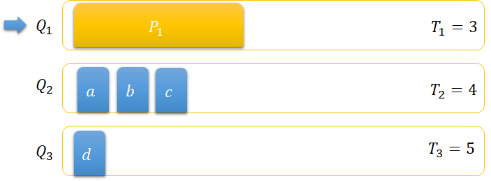
到时刻，位于的并没有在规定时间片内执行完毕，所以此时到达的置于末尾等待执行；
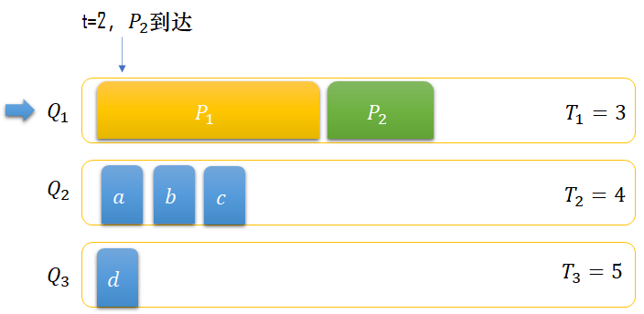
执行完3个单位时间后，由于还剩下的需要运行的时间，所以将调整到末尾，执行；
当执行了1个单位时间后，到了时刻，此时到场，放置在末尾；
当执行了2个单位时间后，到了时刻，此时到场，放置在末尾；
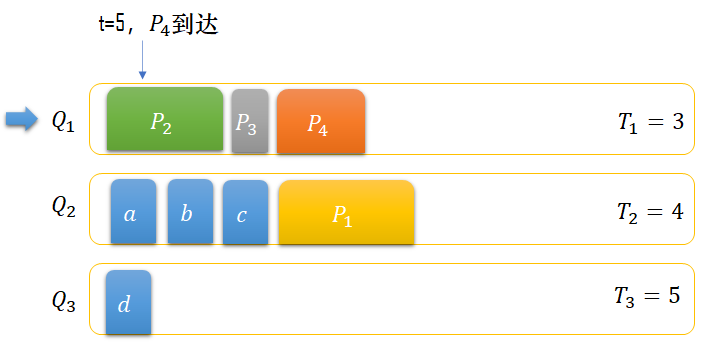
当执行了3个单位时间后，到了时刻，时间片结束，还剩下的需要运行的时间，所以将调整到末尾，执行；
当执行了1个单位时间后，到了时刻，此时任务完成，转而执行；
当执行了3个单位时间后，到了时刻，时间片结束，还剩下的需要运行的时间，所以将调整到末尾，此后为空，CPU转而去执行队列；
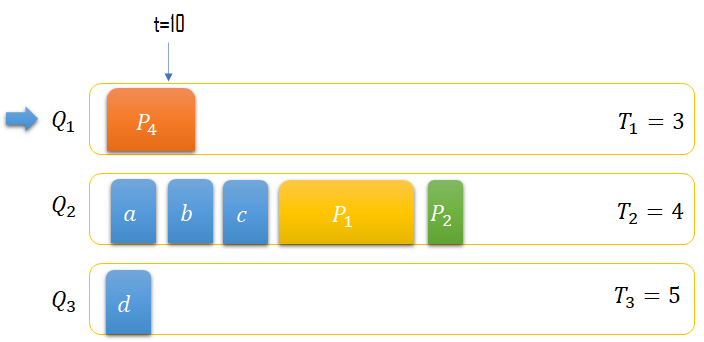
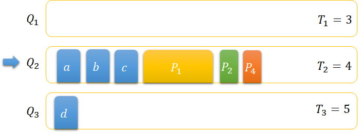
到了时刻，CPU将a,b,c也完成后，继续执行；
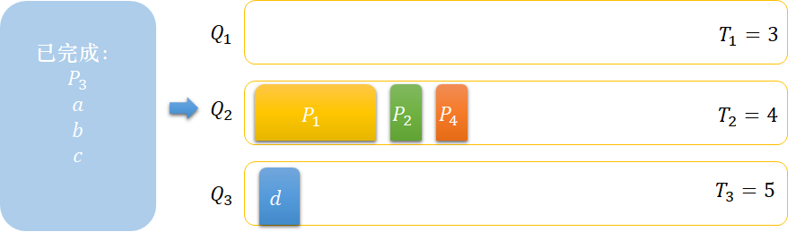
当执行了4个单位时间后，到了时刻，时间片结束，还剩下的需要运行的时间，所以继续将放置在末尾；
到了时刻，CPU将，也完成后，转而对队列进行处理。
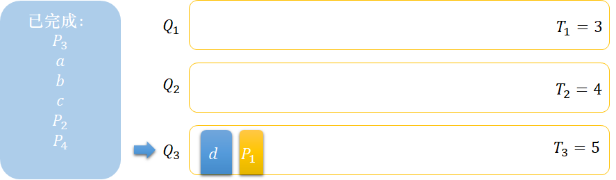
优缺点
多级反馈队列的优势有以下几点：
- 终端型作业用户：短作业优先；
- 短批处理作业用户：周转时间较短；
- 长批处理作业用户：经过多队列的部分执行，不会导致长时间得不到处理
总结与参考
| FCFS | SJF | HRRN | RR | RRMF | |
|---|---|---|---|---|---|
| 中文名称 | 先到先服务 | 短作业优先 | 高响应比优先 | 时间片轮转 | 多级反馈队列 |
| 抢占情况支持 | 不可抢占 | 皆可 | 皆可 | 只能抢占 | 不一定 |
| 优点 | 公平、简单 | 效率最高 | 兼顾长短作业 | 兼顾长短作业 | 兼顾长短作业、响应时间好、可行性强 |
| 缺点 | 不利于短作业 | 长作业会饥饿 | 计算响应比开销大 | 平均等待时间长，上下文切换浪费时间 | 无 |
| 适用于 | 无 | 作业调度、批处理系统 | 无 | 分时系统 | 相当通用 |
| 默认决策模式 | 非抢占 | 非抢占 | 非抢占 | 抢占 | 抢占 |